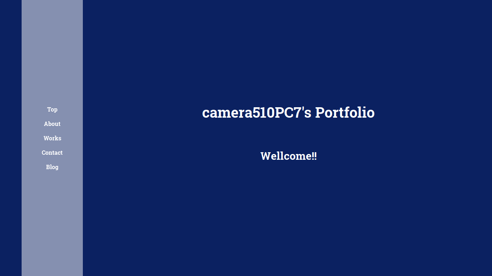
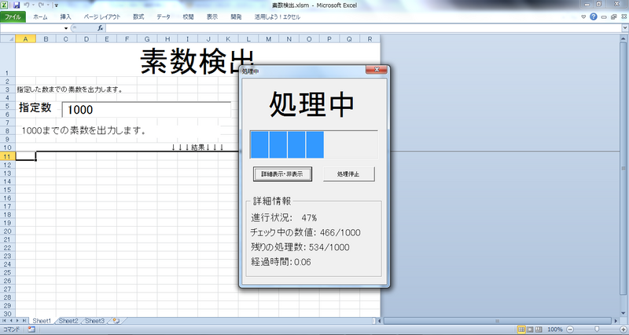

camera510PC7's Portfolio
Wellcome!!
about
自己紹介
camera510PC7です。
趣味でプログラミングをしている学生です。
検定・資格
P検 ２級
第４級アマチュア無線技士
活動
| 2018 | 本ポートフォリオサイトを制作 |
| 2017 | 第４級アマチュア無線技士 取得 |
| 旧ホームページ（むーうぇあはうす）を制作、公開 | |
| 2016 | Ｐ検２級 取得 |
| 2015 | JavaScriptで動くタイマーを制作 |
| 2014 | Excel VBAで素数検出を制作、Vectorにて公開 |
works
画像をクリックすると説明が表示されます。

ポートフォリオサイト
使用言語:HTML、CSS、Jquery
使用言語:HTML、CSS、Jquery
レスポンシブデザインとなっています。
メニューからの画面遷移、ページトップの文字のエフェクト、Worksの詳細表示はJqueryで動かしています。
むーうぇあはうす
使用言語:HTML、CSS、Jquery
使用言語:HTML、CSS、Jquery
旧ホームページ（本ポートフォリオ公開につき削除）。レスポンシブデザインとなっています。初めて外部に公開した自作のホームページです。
スマートフォン表示のメニュー開閉にJqueryを使用していました。
JavaScriptで動くカウントダウンタイマーです。３種類のアラーム音の切り替えができます。
最新版はタイトルのリンクから、アーカイブはこちらから。
最新版はタイトルのリンクから、アーカイブはこちらから。

VBAで指定された数までの素数を出力します。総当りのアルゴリズムを使用しているため数が大きくなるほど処理速度が遅くなります。また高速版は２以外の奇数を対象にして調べています。ダウンロードはタイトルのリンクから行えます。